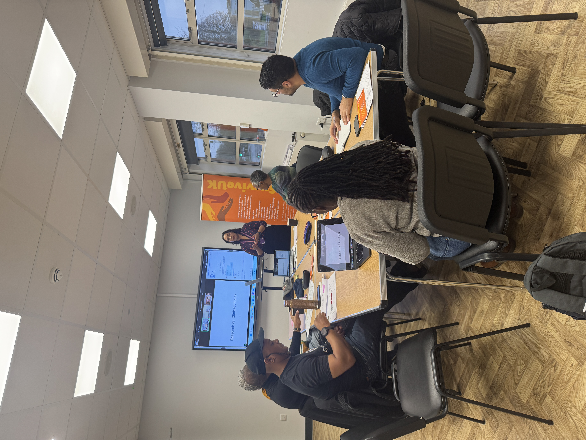

About the event
We partnered with Can-Survive UK to bring together 10 Black Caribbean men with lived experience of prostate cancer to review our study questionnaire and share their perspectives on the wider research.
A key focus was our diet and lifestyle questionnaire. We wanted to ensure that the questions were clear and that the foods and lifestyle factors included were relevant to Black African and Caribbean communities. Contributors reviewed the examples of Caribbean and African foods we had included, helped us identify foods and experiences we had missed, and highlighted areas where the questions or layout could be improved.
Contributors also completed and reviewed the questionnaire so that we could understand how easy it was to follow and how long it might take participants to complete.
““It’s good to see the Caribbean community represented in the questionnaire. Including foods and experiences that are relevant to us makes the research feel more inclusive.”
— Patient contributor


What we discussed
Diet and lifestyle
Whether the questions reflected the diets and lifestyles of Black African and Caribbean communities.
Culturally relevant foods
Reviewing the Caribbean and African foods already included and identifying important foods or dietary patterns we had missed.
What we might not be capturing
Identifying gaps in the questionnaire and areas where additional information could be useful.
Clarity, layout and length
Whether the questions and instructions were easy to understand, how the questionnaire flowed, and how long it took to complete.
Taking part in research
Contributors shared their experiences and views about participating in research, including donating samples for research.
Staying informed
Contributors told us that they want to hear what happens after they take part, including updates on the progress and findings of studies they have contributed to.
Your feedback is shaping our questionnaire
The discussion showed us that involving people with lived experience can identify things that may be missed when research materials are developed by researchers alone.
Participants highlighted the importance of:
- Including foods and dietary patterns relevant to African and Caribbean communities
- Making questions, instructions and layouts clear and easy to follow
- Considering the time and effort required from participants
- Explaining clearly why samples and information are being collected
- Keeping participants informed about the research they have contributed to
- Creating opportunities for continued involvement and dialogue with the research team
Turning feedback into actions
Feedback from this session has directly influenced how we communicate and engage with the community around our research. We are refining the diet and lifestyle questionnaire based on contributors' feedback, including reviewing the range of culturally relevant foods and improving its clarity and layout. Contributors also emphasised that taking part in research should not be the end of their involvement — they want to know how the study progresses and what their contribution helps us discover. In response, we are developing this website to share study progress and upcoming opportunities to get involved, as well as a study brochure that explains the research in an accessible way. We will continue to involve patient and community contributors as the study develops.